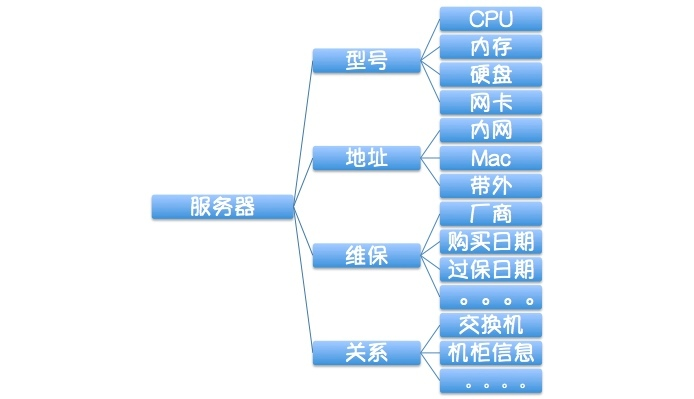
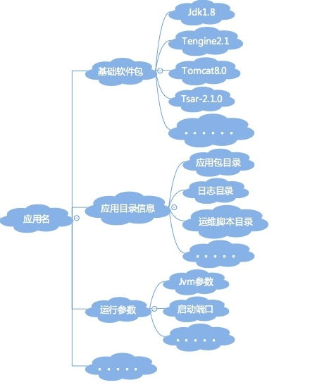

- 00 开篇词 带给你不一样的运维思考.md
- 01 为什么Netflix没有运维岗位？.md
- 02 微服务架构时代，运维体系建设为什么要以应用为核心？.md
- 03 标准化体系建设（上）：如何建立应用标准化体系和模型？.md
- 04 标准化体系建设（下）：如何建立基础架构标准化及服务化体系？.md
- 05 如何从生命周期的视角看待应用运维体系建设？.md
- 06 聊聊CMDB的前世今生.md
- 07 有了CMDB，为什么还需要应用配置管理？.md
- 08 如何在CMDB中落地应用的概念？.md
- 09 如何打造运维组织架构？.md
- 10 谷歌SRE运维模式解读.md
- 11 从谷歌CRE谈起，运维如何培养服务意识？.md
- 12 持续交付知易行难，想做成这事你要理解这几个关键点.md
- 13 持续交付的第一关键点：配置管理.md
- 14 如何做好持续交付中的多环境配置管理？.md
- 15 开发和测试争抢环境？是时候进行多环境建设了.md
- 16 线上环境建设，要扛得住真刀真枪的考验.md
- 17 人多力量大vs.两个披萨原则，聊聊持续交付中的流水线模式.md
- 18 持续交付流水线软件构建难吗？有哪些关键问题？.md
- 19 持续交付中流水线构建完成后就大功告成了吗？别忘了质量保障.md
- 20 做持续交付概念重要还是场景重要？看笨办法如何找到最佳方案.md
- 21 极端业务场景下，我们应该如何做好稳定性保障？.md
- 22 稳定性实践：容量规划之业务场景分析.md
- 23 稳定性实践：容量规划之压测系统建设.md
- 24 稳定性实践：限流降级.md
- 25 稳定性实践：开关和预案.md
- 26 稳定性实践：全链路跟踪系统，技术运营能力的体现.md
- 27 故障管理：谈谈我对故障的理解.md
- 28 故障管理：故障定级和定责.md
- 29 故障管理：鼓励做事，而不是处罚错误.md
- 30 故障管理：故障应急和故障复盘.md
- 31 唇亡齿寒，运维与安全.md
- 32 为什么蘑菇街会选择上云？是被动选择还是主动出击？.md
- 33 为什么混合云是未来云计算的主流形态？.md
- 35 以绝对优势立足：从CDN和云存储来聊聊云生态的崛起.md
- 36 量体裁衣方得最优解：聊聊页面静态化架构和二级CDN建设.md
- 37 云计算时代，我们所说的弹性伸缩，弹的到底是什么？.md
- 38 我是如何走上运维岗位的？.md
- 39 云计算和AI时代，运维应该如何做好转型？.md
- 40 运维需要懂产品和运营吗？.md
- 41 冷静下来想想，员工离职这事真能防得住吗？.md
- 42 树立个人品牌意识：从背景调查谈谈职业口碑的重要性.md
- 划重点：赵成的运维体系管理课精华（一）.md
- 划重点：赵成的运维体系管理课精华（三）.md
- 划重点：赵成的运维体系管理课精华（二）.md
- 新书 《进化：运维技术变革与实践探索》.md
- 特别放送 我的2019：收获，静静等待.md
- 结束语 学习的过程，多些耐心和脚踏实地.md
03 标准化体系建设（上）：如何建立应用标准化体系和模型？
今天我专门来讲讲标准化这个工作。可以说这项工作是运维过程中最基础、最重要的，但也是最容易被忽视的一个环节。
我做过多次公开演讲，每次讲到这个环节，通常会有单独的一页PPT，就放四个字，字号加大加粗，重复三遍，这四个字就是“标准先行”，然后演讲过程中会大声说出“标准先行，标准先行，标准先行”，重要的事情说三遍，目的就是想反复强调这件事情的重要程度，一定不要忽视。
我们运维工作的开展常常不知从何下手，或者上来就冲着工具和自动化去了，却始终不得章法，工具做了一堆，效率却并没有提升。其实绝大多数情况下，问题和原因就是标准化这个基础工作没做扎实。
首先，让我们来看看为什么标准化这个事情如此重要。
为什么要做标准化？
标准化的过程实际上就是对运维对象的识别和建模过程。形成统一的对象模型后，各方在统一的认识下展开有效协作，然后针对不同的运维对象，再抽取出它们所对应的运维场景，接下来才是运维场景的自动化实现。
这有点像我们学的面向对象编程的思想，其实我们就是需要遵循这样一个思路，我们面对的就是一个个实体和逻辑运维对象。
在标准化的过程中，先识别出各个运维对象，然后我们日常做的所有运维工作，都应该是针对这些对象的运维。如果运维操作脱离了对象，那就没有任何意义。同样，没有理清楚对象，运维自然不得章法。
比如我们说扩容，那就要先确定这里到底是服务器的扩容，还是应用的扩容，还是其它对象的扩容。你会发现，对象不同，扩容这个场景所实施的动作是完全不一样的。
如果把服务器的扩容套用到应用的扩容上去，必然会导致流程错乱。同时对于对象理解上的不一致，也会徒增无谓的沟通成本，造成效率低下。自然地，这种情况下的运维自动化不但不能提升效率，还会越自动越混乱。
这就是为什么我每次都会连续强调三遍“标准先行”的原因。虽然这个事情比较枯燥和繁琐，但是于纷繁复杂中抽象出标准规范的东西，是我们后续一系列自动化和稳定性保障的基础。万丈高楼平地起，所以请你一定不要忽略这个工作。
好，总结一下标准化的套路：
- 第一步，识别对象；
- 第二步，识别对象属性；
- 第三步，识别对象关系；
- 第四步，识别对象场景。
接下来我们就按照上面这个思路，一起来分析从基础设施层面和应用层面应该识别出哪些运维对象。
基础设施层面的标准化
基础设施层面的运维对象应该不难识别，因为都是一个个物理存在的实体，我们可以进行如下分析。
- 第一步，识别实体对象，主要有服务器、网络、IDC、机柜、存储、配件等。
- 第二步，识别对象的属性，比如服务器就会有SN序列号、IP地址、厂商、硬件配置（如CPU、内存、硬盘、网卡、PCIE、BIOS）、维保信息等；网络设备如交换机也会有厂商、型号、带宽等信息。
- 第三步，识别对象之间的关联关系，比如服务器所在的机柜，虚拟机所在的宿主机、机柜所在IDC等简单关系；复杂一点就会有核心交换机、汇聚交换机、接入交换机以及机柜和服务器之间的级联关系等，这些相对复杂一些，也就是我们常说的网络拓扑关系。
把以上信息梳理清楚，通过ER建模工具进行数据建模，再将以上的信息固化到DB中，一个资源层面的信息管理平台就基本成型了。
以服务器为例简单展示一下，我们的视角就是下面这样的：

但是，信息固化不是目的，也没有价值，只有信息动态流转起来才有价值。接下来我们需要做的事情，就是识别出针对运维对象所实施的日常运维操作有哪些，也就是识别出运维场景是什么。
- 第四步，还是以服务器为例，我们针对服务器的日常操作有采购、入库、安装、配置、上线、下线、维修等等。另外，可能还会有可视化和查询的场景，如拓扑关系的可视化和动态展示，交换机与服务器之间的级联关系、状态（正常or故障）的展示等，这样可以很直观地关注到资源节点的状态。
完成了这些工作，接下来才是对上述运维场景的自动化开发。所以你看，在真正执行去做工具和自动化平台之前，其实是需要先做好大量的基础准备工作的。我要再次强调这一点，一定不能忽视。
应用层面的标准化
下面我们再一起看一个逻辑上的对象，就是我们前面经常提到的运维的核心：应用。对这个逻辑对象的建模会相对复杂一些，不过我们依然可以按照上面的套路来。
- 第一步，识别对象。
我们前面讲过，这个识别过程是在做微服务架构设计或拆分的时候就确定下来的。所以严格地讲，它不应该是运维阶段才被识别出来的，而是在之前设计阶段就被识别和确认下来，然后延伸到运维这里才对。
- 第二步，识别对象属性。
一个应用是业务的抽象逻辑，所以会有业务和运维两个维度的属性。业务属性在业务架构时确定，这主要是需要业务架构师去识别的，但是它的运维属性就应该由运维来识别了。
下面我们一起来看一下，一个应用应该具备哪些基本的运维属性。
应用的元数据属性，也就是简单直接地描述一个应用的信息，如应用名、应用Owner、所属业务、是否核心链路应用以及应用功能说明等，这里的关键是应用名；
应用代码属性，主要是编程语言及版本（决定了后续的构建方式），GitLab地址；
应用部署模式，涉及到基础软件包，如语言包Java、C++、Go等；容器如Tomcat、JBoss等；
应用目录信息，如运维脚本目录、日志目录、应用包目录、临时目录等；
应用运行脚本，如启停脚本、健康监测脚本；
应用运行时的参数配置，如运行端口、Java的JVM参数GC方式、新生代、老生代、永生代的堆内存大小配置等。
从应用属性的视角，应该是下面这样一个视图（简单示例，不完整）：

- 第三步，识别对象关系。
也就是应用与外部的关系，概括起来有三大类：
第一类是应用与基础设施的关系，包括应用与资源、应用与VIP、应用与DNS等等的关系；
第二类是平行层面的应用与应用之间的关系，这里再细分下去就是应用服务或API与其它应用服务和API的依赖关系。如果你有相关的经验，应该会联想到全链路这样的工具平台了，没错，这样的平台就是用来处理应用间关系管理的。
第三类是应用与各类基础组件之间的关系，比如应用与缓存，应用与消息、应用与DB等等之间的关系。
- 第四步，识别应用的运维场景。
这个就会比较多了，比如应用创建、持续集成、持续发布、扩容、缩容、监控等；再复杂点的比如容量评估、压测、限流降级等。
好，这里我们先收一下，聚焦到标准化的层面，通过基础设施和应用层面标准化的示例，我想你应该可以掌握基本的建模思路了，这样的思路可以应用到其它的运维对象上 。
同时，通过上面这些内容，你应该可以比较清晰地看到，我们的每一个运维操作都是针对某个运维对象的，这一点在规划运维体系时非常重要。
而在这些对象中，应用又是重中之重，是微服务架构下的核心运维对象。
从应用标准化的过程中我们也可以看到，针对应用的识别和建模，明显复杂很多。所以，后面我还会从理论和实践的角度来继续强化和分析这个概念。
最后，给你留两个小问题。
标准化部分我们提到，在规划和设计一个运维技术方案时，一定要找到对象主体，那请你思考以下问题：我们现在经常听到一些高大上的词汇，如水平扩展、弹性伸缩和自动化扩缩容等，你能否说一说这些技术手段的主体是谁，也就是是谁的水平扩展？弹性伸缩的是什么？同时，这些名词之间又有什么关系？
在对象属性识别过程中，我们进行了一些关键项的举例，但是如果换一个对象，有没有好的方法论来指导我们进行准确和全面的识别，而不至于遗漏？从我们今天的内容中，你有没有发现一些规律呢？
如果今天的内容对你有帮助，也请你分享给身边的朋友。
欢迎你留言与我一起讨论。
© 2019 - 2023 Liangliang Lee. Powered by gin and hexo-theme-book.